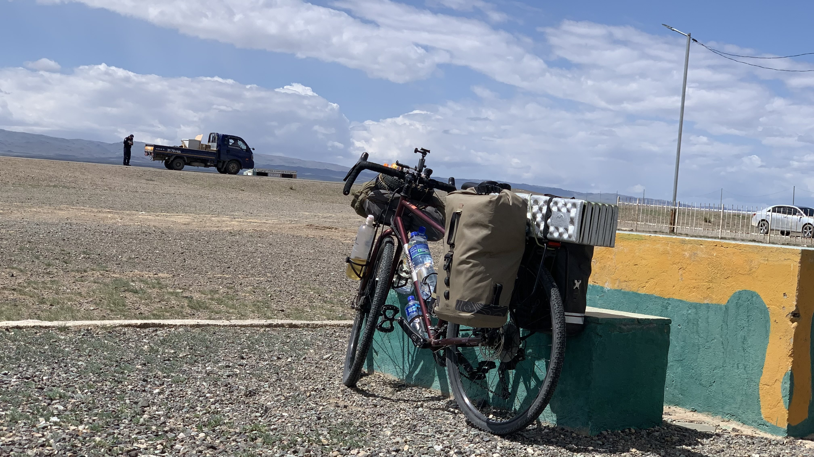
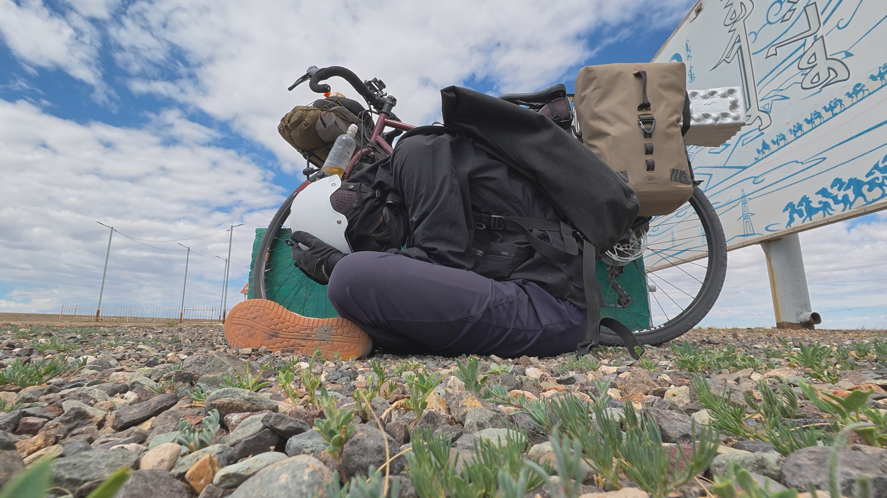
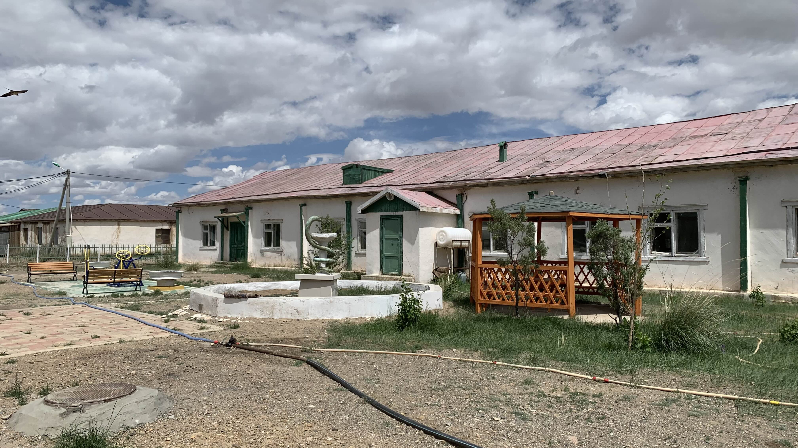
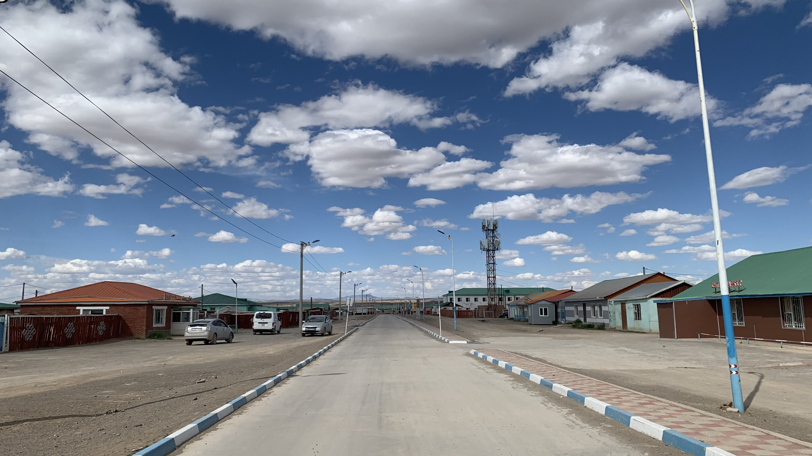
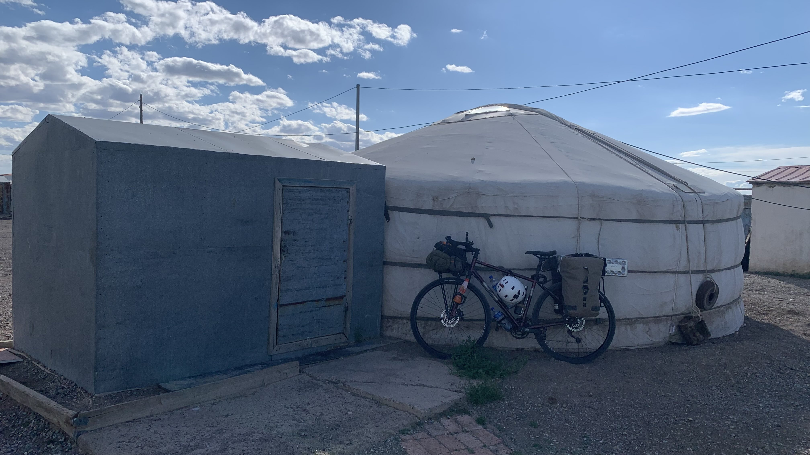
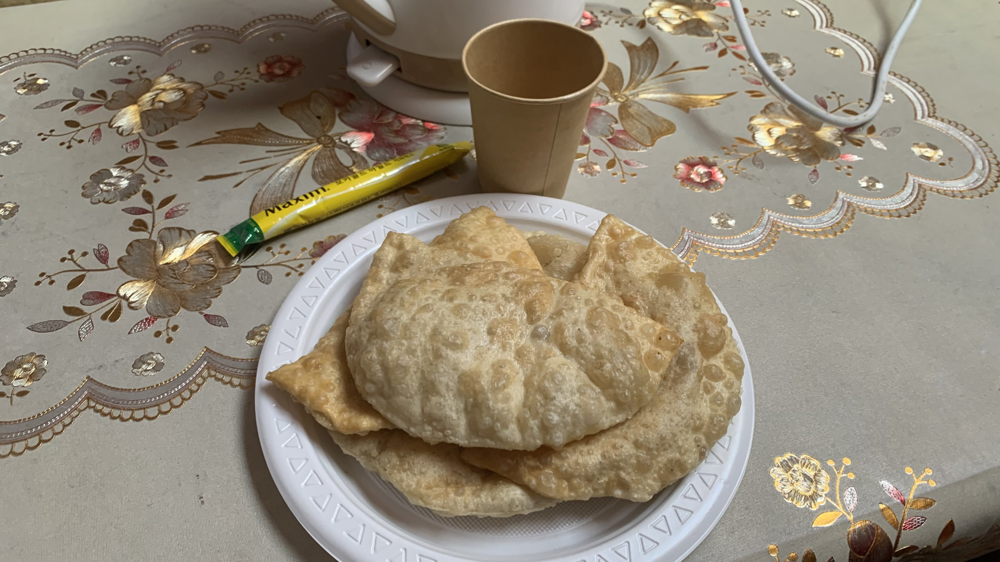
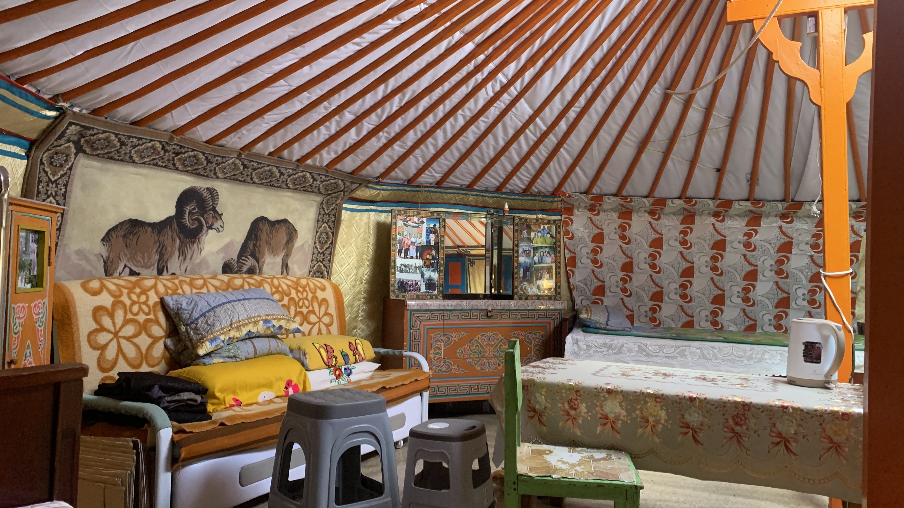

k-Day 105｜二十美金
昨晚睡得舒服，凌晨四點半就醒了。

將睡袋塞回壓縮袋，推開木門往廁所的方向走。太陽剛剛升起來，這時間就起床堪稱奇蹟。

掛上行李，走到蒙古包和老闆夫婦道謝。

兩人似乎也剛睡醒，拍照後我遞上河童貼紙，從老闆恍惚的眼神中看見了疑惑。給小朋友貼紙時一般都會看到開心的表情，但是蒙古人好像沒有這種搜集貼紙的習慣，畢竟也不是隨身攜帶保溫杯、筆電之類，坐在咖啡廳裡面的習性。
從出發那一刻就沒有抬起頭，一個早上的視線都是把手前後50公分的地面。是時候開啟大腦欺騙術，在腦中和自己說：「只是颱風天要從八里騎去大安。」
用最小的齒盤硬是踩到三十公里外，眼角還浮現淡水河的場景。
十一點右手邊出現今天的目的地Delger鎮旁的大湖，好天氣時可以在湖邊露營，今天是不可能了。

首先在鎮外的水泥塊旁躲風，車身和馬鞍包削弱了一點西風，水泥塊則擋住身體。

這一個月來，抱頭縮著身體的時間已經比帥氣騎車的時間還要多。
過了一小時，聽到一句英文招呼。把耳朵露出手臂，抬頭看見一名警察朝我走來。
「你還好嗎？」
「還好，只是在休息。」
「準備去吃飯嗎？」他的頭朝向我背後的城鎮。
「是的。」既然這麼回答了，只好往連接城鎮的土路騎進去。

城鎮不大，沿著邊緣走，找到一個花園，圍欄沒有關上，於是牽車進去。
水池中央有一條蛇，應該是醫療機構。把二十三號靠在涼亭中央的桌子，躺在長凳上就睡著了。

太陽很大，氣溫也很高，躺兩個小時卻被風吹得穿上羽絨衣，看來還得找個正當的露宿地點。

繞了小鎮一圈，問到的人都跟我說鎮上不能露營，只好走進一間餐廳點了煎餅和咖啡，詢問老闆可否讓我在院子裡搭帳篷。
老闆打電話給應該是家中的孩子翻譯。煎餅一個2500元，有咖啡。
「這裡有沒有地方可以搭帳篷呢？」
「你會在這裡住幾天？」
「一晚。」
「你可以搭在院子裡。」
開心地牽車進門，老闆招手要我進蒙古包看看，說：「這個蒙古包裡面可以睡覺。」
「一晚多少錢呢？」
「五萬。」老闆同時比了個五的手勢。
「我沒有錢，可以睡在院子就好。」
老闆在手機上按了兩萬的數字。
看來是希望能做這單生意，想像了晚上營釘被風吹飛早上狼狽收拾的畫面，於是答應住在裡面。

點頭後老闆讓我坐進蒙古包，不久後端上餐點。
吃著煎餅，老闆坐在我對面又打了電話給家中的孩子。電話中的年輕人用流利的英文再次確認服務項目和金額。
「一個晚上是20美金。」
「二十美金？剛剛說的是二十千蒙古幣。」
「二十千？不可能的，是二十美金。」
我在手機上按下二十美金換算成蒙古幣，指著上面的七萬多塊看向坐在對面的老闆，老闆笑著點點頭。
「我沒有那麼多錢，可以讓我在院子露營就好嗎？」
「你會在這裡住幾天？」
「一晚。」
「如果是一晚的話可以算你兩萬」。
付了錢後老闆和閒聊了一下，同樣是有關旅行之類的話題。

距離口岸還有600公里，未來五天氣象仍是大風，過了阿爾泰要攀升一千八百公尺，翻過山後走土路往邊境，簽證剩下15天，外套有點臭。
今日花費： 飲料零食 12900、晚餐+咖啡 12500＋800、住宿 20000元